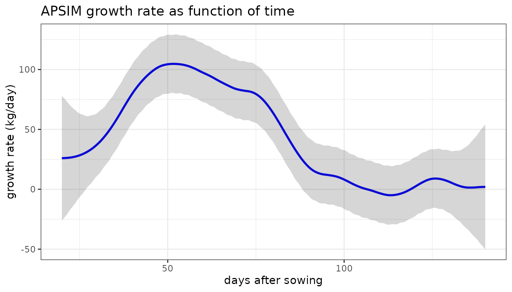
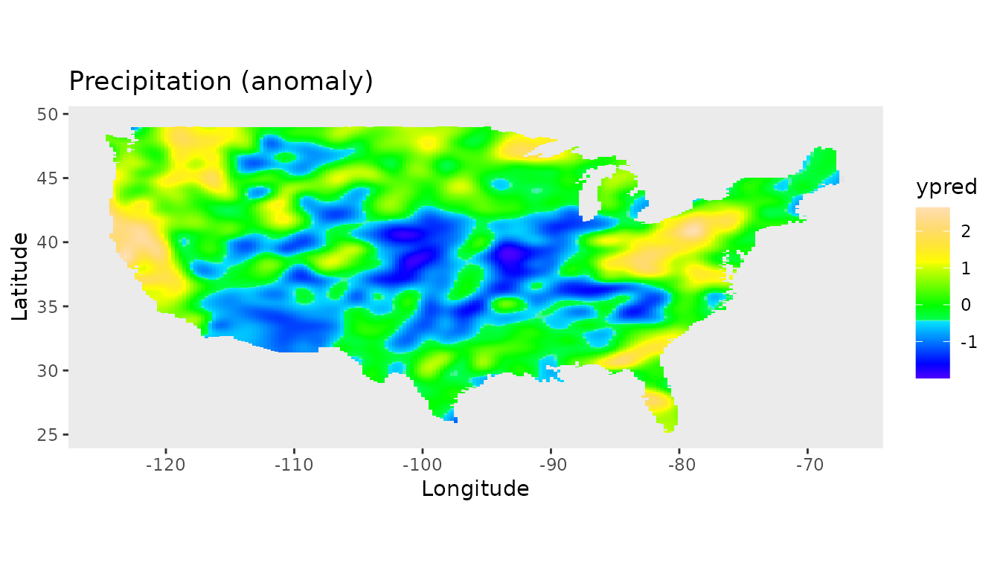

Solving Linear Mixed Models using LMMsolver
2021-10-26
Solving_Linear_Mixed_Models.RmdThe LMMsolver package
The aim of the LMMsolver package is to provide an efficient and flexible system to estimate variance components using restricted maximum likelihood or REML (Patterson and Thompson 1971), for models where the mixed model equations are sparse. An example of an application is using splines to model spatial (Rodríguez-Álvarez et al. 2018; Boer, Piepho, and Williams 2020) or temporal (Bustos-Korts et al. 2019) trends. Another example is mixed model Quantitative Trait Locus (QTL) analysis for multiparental populations, allowing for heterogeneous residual variance and design matrices with Identity-By-Descent (IBD) probabilities (Li et al. 2021).
A Linear Mixed Model (LMM) has the form
\[ y = X \beta + Z u + e, \quad u \sim N(0,G), \quad e \sim N(0,R) \] where \(y\) is a vector of observations, \(\beta\) is a vector with the fixed effects, \(u\) is a vector with the random effects, and \(e\) a vector of random residuals. \(X\) and \(Z\) are design matrices.
The LMMsolve package can fit models where the matrices \(G^{-1}\) and \(R^{-1}\) are a linear combination of precision matrices \(Q_{G,i}\) and \(Q_{R,i}\): \[
G^{-1} = \sum_{i} \psi_i Q_{G,i} \;, \quad R^{-1} = \sum_{i} \phi_i Q_{R,i}
\] where the precision parameters \(\psi_i\) and \(\phi_i\) are estimated using REML. For most standard mixed models \(1/{\psi_i}\) are the variance components and \(1/{\phi_i}\) the residual variances. We use a formulation in terms of precision parameters to allow for non-standard mixed models using tensor product splines introduced in Rodríguez-Álvarez et al. (2015).
If the matrices \(G^{-1}\) and \(R^{-1}\) are sparse, the mixed model equations can be solved using efficient sparse matrix algebra implemented in the spam package (Furrer and Sain 2010). To calculate the derivatives of the log-likelihood in an efficient way, the automatic differentiation of the Cholesky matrix (Smith 1995) was implemented in C++ using the Rcpp package (Eddelbuettel and Balamuta 2018).
Smooth trend in one dimension.
Oats field trial
As a first example we will use an oats field trial from the agridat package. There were 24 varieties in 3 replicates, each consisting of 6 incomplete blocks of 4 plots. The plots were laid out in a single row.
## Load data.
data(john.alpha, package = "agridat")
head(john.alpha)
#> plot rep block gen yield
#> 1 1 R1 B1 G11 4.1172
#> 2 2 R1 B1 G04 4.4461
#> 3 3 R1 B1 G05 5.8757
#> 4 4 R1 B1 G22 4.5784
#> 5 5 R1 B2 G21 4.6540
#> 6 6 R1 B2 G10 4.1736In the following subsections we will use two methods to correct for spatial trend, to show some of the options of the package.
Modelling spatial trend using P-splines
In this subsection we will illustrate how the package can be used to fit mixed model P-splines, for details see Boer, Piepho, and Williams (2020).
In the following mixed model we include rep and gen as fixed effect, and we use spl1D to model a one dimensional P-spline (Eilers and Marx 1996) with 100 segments, and the default choice of cubical B-splines and second order differences:
## Fit mixed model with fixed and spline part.
obj1 <- LMMsolve(fixed = yield ~ rep + gen,
spline = ~spl1D(x = plot, nseg = 100),
data = john.alpha)A high number of segments can be used for splines in one dimension, as the corresponding mixed model equations are sparse, and therefore can be solved fast (Smith 1995; Furrer and Sain 2010).
We can obtain a table with effective dimensions (see e.g. Rodríguez-Álvarez et al. (2018)) and penalties (the precision parameters \(\psi_i\) and \(\phi_i\)) using the summary function:
summary(obj1)
#> Table with effective dimensions and penalties:
#>
#> Term Effective Model Nominal Ratio Penalty
#> 1 (Intercept) 1.000000 1 1 1.00000000 0.00000
#> 2 rep 2.000000 2 2 1.00000000 0.00000
#> 3 gen 23.000000 23 23 1.00000000 0.00000
#> 4 splF 1.000000 1 1 1.00000000 0.00000
#> 5 s(plot) 4.181297 103 45 0.09291771 9588.61061
#> 6 residual 40.818703 72 45 0.90708229 13.28288
#>
#> Total Effective Dimension: 72The effective dimension gives a good balance between model complexity and fit to the data for the random terms in the model. In the table above the first four terms are fixed effects and not penalized, and therefore the effective dimension is equal to the number of parameters in the model. The splF is the fixed part of the spline, the linear trend. The term s(plot) is a random effect, with effective dimension 4.2, indicating that is important to correct for spatial trend.
The estimated genetic effects are given by the coef function:
genEff <- coef(obj1)$gen
head(genEff, 4)
#> gen_G01 gen_G02 gen_G03 gen_G04
#> 0.0000000 -0.5699756 -1.5231789 -0.4593992The first genotype (G01) is the reference, as genotypes were modelled as fixed effect in the model.
The smooth trend along the field on a dense grid of 1000 points can be obtained as follows:
## Extract smooth trend from mixed model.
plotDat1 <- obtainSmoothTrend(obj1, grid = 1000, includeIntercept = TRUE)
head(plotDat1)
#> plot ypred
#> 1 1.000000 5.036391
#> 2 1.071071 5.035374
#> 3 1.142142 5.034355
#> 4 1.213213 5.033335
#> 5 1.284284 5.032314
#> 6 1.355355 5.031290The trend can then be plotted.
Modelling spatial trend using random and ginverse arguments.
Another way to correct for spatial trend is using the Linear Variance (LV) model, which is closely connected to the P-splines model (Boer, Piepho, and Williams 2020). First we need to define the precision matrix for the LV model, see Appendix in Boer, Piepho, and Williams (2020) for details:
## add plot as factor
john.alpha$plotF <- as.factor(john.alpha$plot)
## define the precision matrix, see eq. A1 in Boer et al (2020):
N <- nrow(john.alpha)
cN <- c(1/sqrt(N-1), rep(0, N-2), 1/sqrt(N-1))
D <- diff(diag(N), diff = 1)
Delta <- 0.5*crossprod(D)
LVinv <- 0.5*(2*Delta + cN %*% t(cN))
## add LVinv to list, with name corresponding to random term:
lGinv <- list(plotF=LVinv)Given the precision matrix for the LV model we can define the model in LMMsolve using the random and ginverse arguments:
## Fit mixed model with first degree B-splines and first order differences.
obj2 <- LMMsolve(fixed = yield ~ rep + gen,
random = ~plotF,
ginverse = lGinv,
data = john.alpha)The deviance for the LV-model is 54.49 and the variances
summary(obj1, which = "variances")
#> Table with variances:
#>
#> VarComp Variance
#> 1 splR 0.0001042904
#> 2 residual 0.0752848705as reported Boer, Piepho, and Williams (2020), Table 1.
Model biomass as function of time.
In this section we show an example of mixed model P-splines to fit biomass as function of time. As an example we use wheat data simulated with the crop growth model APSIM. This data set is included in the package. For details on this simulated data see Bustos-Korts et al. (2019).
data(APSIMdat)
head(APSIMdat)
#> env geno das biomass
#> 1 Emerald_1993 g001 20 65.57075
#> 2 Emerald_1993 g001 21 60.70499
#> 3 Emerald_1993 g001 22 74.06247
#> 4 Emerald_1993 g001 23 63.73951
#> 5 Emerald_1993 g001 24 101.88005
#> 6 Emerald_1993 g001 25 96.84971The first column is the environment, Emerald in 1993, the second column the simulated genotype (g001), the third column is days after sowing (das), and the last column is the simulated biomass with medium measurement error.
The model can be fitted with
The effective dimensions are:
summary(obj2)
#> Table with effective dimensions and penalties:
#>
#> Term Effective Model Nominal Ratio Penalty
#> 1 (Intercept) 1.000000 1 1 1.00000000 0.000000e+00
#> 2 splF 1.000000 1 1 1.00000000 0.000000e+00
#> 3 s(das) 6.556916 203 119 0.05510013 4.738743e-02
#> 4 residual 112.443084 121 119 0.94489987 1.003077e-05
#>
#> Total Effective Dimension: 121The fitted smooth trend can be obtained as explained before:
plotDat2 <- obtainSmoothTrend(obj2, grid = 1000, includeIntercept = TRUE)
ggplot(data = APSIMdat, aes(x = das, y = biomass)) +
geom_point(size = 1.2) +
geom_line(data = plotDat2, aes(y = ypred), color = "red", size = 1) +
labs(title = "APSIM biomass as function of time",
x = "days after sowing", y = "biomass (kg)") +
theme(panel.grid = element_blank())
The growth rate (first derivative) as function of time can be obtained using deriv = 1 in function obtainSmoothTrend:
plotDatDt <- obtainSmoothTrend(obj2, grid = 1000, deriv = 1)
ggplot(data = plotDatDt, aes(x = das, y = ypred)) +
geom_line(color = "red", size = 1) +
labs(title = "APSIM growth rate as function of time",
x = "days after sowing", y = "growth rate (kg/day)") +
theme(panel.grid = element_blank())
Smooth trends in two dimensions
For two-dimensional mixed P-splines we use the model defined in Rodríguez-Álvarez et al. (2015). As an example we use the USprecip data set in the spam package (Furrer and Sain 2010), analysed in Rodríguez-Álvarez et al. (2015).
## Get precipitation data from spam
data(USprecip, package = "spam")
## Only use observed data
USprecip <- as.data.frame(USprecip)
USprecip <- USprecip[USprecip$infill == 1, ]The two-dimensional P-spline can be defined with the spl2D() function, and with longitude and latitude as covariates. The number of segments chosen here is equal to the number of segments used in Rodríguez-Álvarez et al. (2015).
obj3 <- LMMsolve(fixed = anomaly ~ 1,
spline = ~spl2D(x1 = lon, x2 = lat, nseg = c(41, 41)),
data = USprecip)The summary function gives a table with the effective dimensions and the penalty parameters:
summary(obj3)
#> Table with effective dimensions and penalties:
#>
#> Term Effective Model Nominal Ratio Penalty
#> 1 (Intercept) 1.0000 1 1 1.0000000 0.00000000
#> 2 splF 3.0000 3 3 1.0000000 0.00000000
#> 3 s(lon) 302.6004 1936 1932 0.1566255 0.09679905
#> 4 s(lat) 409.0868 1936 1932 0.2117426 0.36223681
#> 5 residual 5190.3128 5906 5902 0.8794159 13.52577270
#>
#> Total Effective Dimension: 5906A plot for the smooth trend can be obtained in a similar way as for the one-dimensional examples:
plotDat3 <- obtainSmoothTrend(obj3, grid = c(200, 300), includeIntercept = TRUE)
usa = maps::map("usa", regions = "main", plot = FALSE)
v <- sp::point.in.polygon(plotDat3$lon, plotDat3$lat, usa$x, usa$y)
plotDat3 <- plotDat3[v == 1, ]
ggplot(plotDat3, aes(x = lon, y = lat, fill = ypred)) +
geom_tile(show.legend = TRUE) +
scale_fill_gradientn(colors = topo.colors(100))+
labs(title = "Precipitation (anomaly)", x = "Longitude", y = "Latitude") +
coord_fixed() +
theme(panel.grid = element_blank())
Instead of using the grid argument, newdata can be used to make predictions for locations specified in a data.frame:
## Predictions for new data, using city coordinates from maps package.
data(us.cities, package = "maps")
## Column names have to match column names used for fitting the model.
colnames(us.cities)[colnames(us.cities) == "long"] <- "lon"
## Select columns name, lat and lon
us.cities <- us.cities[, c(1,4,5)]
head(us.cities)
#> name lat lon
#> 1 Abilene TX 32.45 -99.74
#> 2 Akron OH 41.08 -81.52
#> 3 Alameda CA 37.77 -122.26
#> 4 Albany GA 31.58 -84.18
#> 5 Albany NY 42.67 -73.80
#> 6 Albany OR 44.62 -123.09
pred3 <- obtainSmoothTrend(obj3, newdata = us.cities, includeIntercept = TRUE)
head(pred3)
#> name lat lon ypred
#> 1 Abilene TX 32.45 -99.74 -0.50934296
#> 2 Akron OH 41.08 -81.52 1.04632673
#> 3 Alameda CA 37.77 -122.26 1.15536050
#> 4 Albany GA 31.58 -84.18 1.00461677
#> 5 Albany NY 42.67 -73.80 0.09537157
#> 6 Albany OR 44.62 -123.09 0.79867839QTL mapping with IBD probabilities.
In QTL-mapping for multiparental populations the Identity-By-Descent (IBD) probabilities are used as genetic predictors in the mixed model (Li et al. 2021). The following simulated example is for illustration. It consists of three parents (A, B, and C), and two crosses AxB, and AxC. AxB is a population of 100 Doubled Haploids (DH), AxC of 80 DHs. The probabilities, pA, pB, and pC, are for a position on the genome close to a simulated QTL. This simulated data is included in the package.
## Load data for multiparental population.
data(multipop)
head(multipop)
#> cross ind pA pB pC pheno
#> 1 AxB AxB0001 0.17258816 0.82741184 0 9.890637
#> 2 AxB AxB0002 0.82170793 0.17829207 0 6.546568
#> 3 AxB AxB0003 0.95968439 0.04031561 0 7.899249
#> 4 AxB AxB0004 0.96564081 0.03435919 0 4.462866
#> 5 AxB AxB0005 0.04838734 0.95161266 0 5.207757
#> 6 AxB AxB0006 0.95968439 0.04031561 0 5.265580The residual (genetic) variances for the two populations can be different. Therefore we need to allow for heterogeneous residual variances, which can be defined by using the residual argument in LMMsolve:
## Fit null model.
obj4 <- LMMsolve(fixed = pheno ~ cross,
residual = ~cross,
data = multipop)
dev4 <- deviance(obj4)The QTL-probabilities are defined by the columns pA, pB, pC, and can be included in the random part of the mixed model by using the group argument:
## Fit alternative model - include QTL with probabilities defined in columns 3:5
lGrp <- list(QTL = 3:5)
obj5 <- LMMsolve(fixed = pheno ~ cross,
group = lGrp,
random = ~grp(QTL),
residual = ~cross,
data = multipop)
dev5 <- deviance(obj5)The approximate \(-log10(p)\) value is given by
## Deviance difference between null and alternative model.
dev <- dev4 - dev5
## Calculate approximate p-value
minlog10p <- -log10(0.5*pchisq(dev, 1, lower.tail=FALSE))
round(minlog10p, 2)
#> [1] 8.76The estimated QTL effects of the parents A, B, and C are given by:
coef(obj5)$QTL
#> QTL_pA QTL_pB QTL_pC
#> -1.2676362 0.6829275 0.5847088References
Boer, Martin P., Hans Peter Piepho, and Emlyn R. Williams. 2020. “Linear Variance, P-splines and Neighbour Differences for Spatial Adjustment in Field Trials: How are they Related?” J. Agric. Biol. Environ. Stat. 25 (4): 676–98. https://doi.org/10.1007/S13253-020-00412-4.
Bustos-Korts, Daniela, Martin P. Boer, Marcos Malosetti, Scott Chapman, Karine Chenu, Bangyou Zheng, and Fred A. van Eeuwijk. 2019. “Combining Crop Growth Modeling and Statistical Genetic Modeling to Evaluate Phenotyping Strategies.” Front. Plant Sci. 10 (November). https://doi.org/10.3389/FPLS.2019.01491/FULL.
Eddelbuettel, Dirk, and James Joseph Balamuta. 2018. “Extending extitR with extitC++: A Brief Introduction to extitRcpp.” The American Statistician 72 (1): 28–36. https://doi.org/10.1080/00031305.2017.1375990.
Eilers, PHC, and BD Marx. 1996. “Flexible smoothing with B-splines and penalties.” Stat. Sci. http://www.jstor.org/stable/2246049.
Furrer, R, and SR Sain. 2010. “spam: A sparse matrix R package with emphasis on MCMC methods for Gaussian Markov random fields.” J. Stat. Softw. http://core.kmi.open.ac.uk/download/pdf/6340272.pdf.
Li, Wenhao, Martin P. Boer, Chaozhi Zheng, Ronny V. L. Joosen, and Fred A. van Eeuwijk. 2021. “An IBD-based mixed model approach for QTL mapping in multiparental populations.” Theor. Appl. Genet. 2021 1 (August): 1–18. https://doi.org/10.1007/S00122-021-03919-7.
Patterson, HD, and R Thompson. 1971. “Recovery of inter-block information when block sizes are unequal.” Biometrika. http://biomet.oxfordjournals.org/content/58/3/545.short.
Rodríguez-Álvarez, María Xosé, Martin P. Boer, Fred A. van Eeuwijk, and Paul H. C. Eilers. 2018. “Correcting for spatial heterogeneity in plant breeding experiments with P-splines.” Spat. Stat. 23 (March): 52–71. https://doi.org/10.1016/J.SPASTA.2017.10.003.
Rodríguez-Álvarez, María Xosé, Dae Jin Lee, Thomas Kneib, María Durbán, and Paul Eilers. 2015. “Fast smoothing parameter separation in multidimensional generalized P-splines: the SAP algorithm.” Stat. Comput. 25 (5): 941–57. https://doi.org/10.1007/S11222-014-9464-2.
Smith, S. P. 1995. “Differentiation of the Cholesky Algorithm.” J. Comput. Graph. Stat. 4 (2): 134. http://www.jstor.org/stable/1390762?origin=crossref.